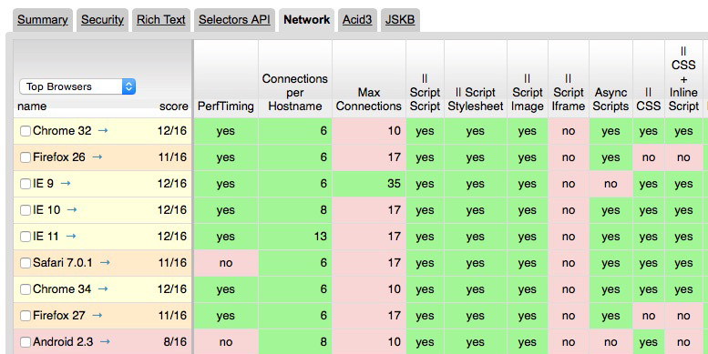
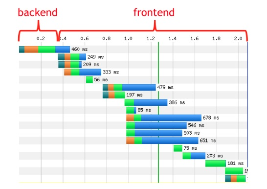
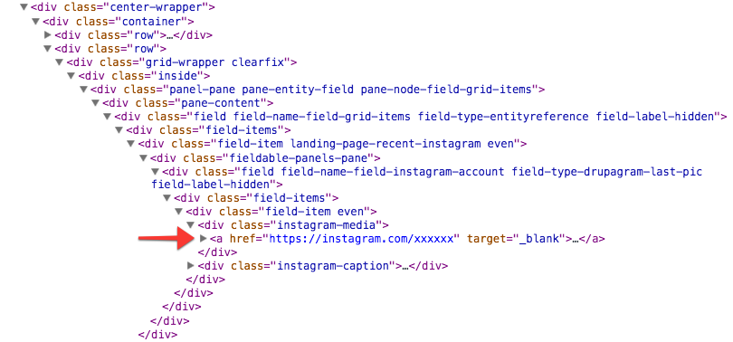
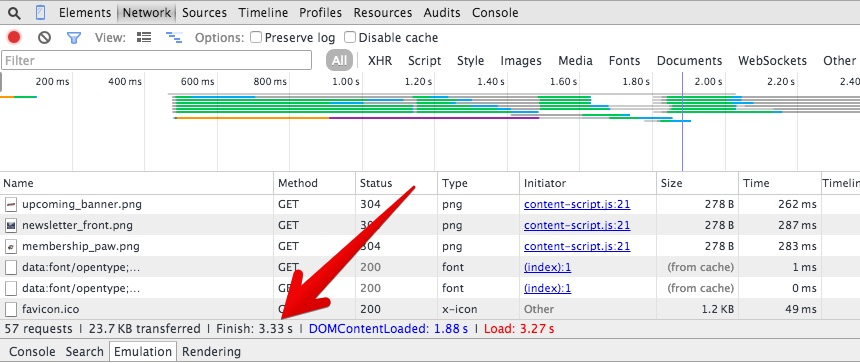
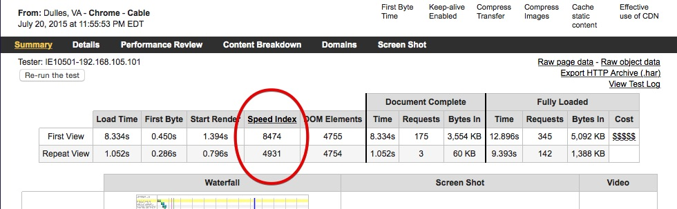
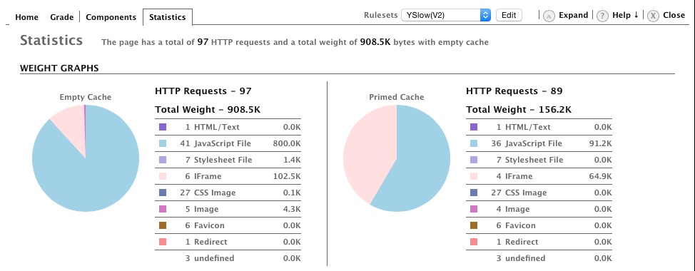
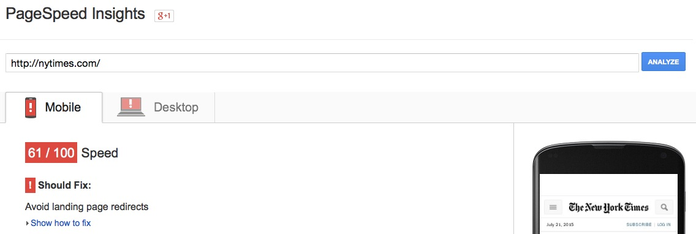

Building a Lean, Mean
Drupal Theme
Presented on July 23, 2015 at DrupalGovCon
Jim Smith
- Oak Ridge, Tenn.
- Front-end Drupal Developer at DSFederal
- Started using Drupal in 2005
- Drupal user #16880
Get the home version
for hours and hours of fun!
Why do we care
about performance?
- Fast sites make impatient users happier.
- Happy users view more pages.
- Happy users buy more stuff.
- Fast sites are cheaper to host.
- Clean code is easier to maintain.
How much does the average web page weigh?
Size of average web page
(top 1000 websites)
- More than 1600K
source: WebsiteOptimization.com (July 2014)
Number of objects in average web page
(top 1000 websites)
- About 112 objects
source: WebsiteOptimization.com (July 2014)
source: WebsiteOptimization.com (July 2014)
Just because we think we have a lot of bandwidth doesn't mean we have to use it.

source: Micha Godbolt (@michagodbolt) - July 20, 2015
Delaying page load time by one second
- Conversions drop by 7%
- Page views drop by 11%
- Customer satisfaction drops by 16%
source: Aberdeen Group (November 2008)
Don't be slow.
How do we go faster?
But wait...
Assumptions
- Every site will have different requirements, different libraries, different needs.
- The fastest request you will ever make is the one you don’t make.
Limits to connections
Connectionss per Hostname and Total Connections
source: Browserscope.com
20% Rule
For a performance change to be noticeable, it must be at least 20% faster than your previous performance.
source: apmblog.dynatrace.com
Performance Golden Rule
80-90% of the end-user response time
is spent on the frontend.
Start there.
source: Steve Souders Blog
Backend vs. Frontend
source: Steve Souders Blog
Backend vs. Frontend
- Backend: The time it takes the server to send the first byte to the browser.
- Frontend: Everything else.
source: Steve Souders Blog
6 Ways to Speed Up Your Site
- 1. Cache everything you can
- 2. Clean up Drupal's cruft
- 3. Clean up your code
- 4. Concatenate and minify your code
- 5. Deliver assets efficiently
- 6. Set a performance budget and test against it
Cache everything you can
"The first rule of optimization and caching is this: never do something time consuming twice if you can hold onto the results and re-use them."
source: Jeff Eaton (Lullabot Blog)
Cache everything you can
- Turn on page and block caching
- Turn on Views caching, including blocks
- Install Views Content Cache module
- For smaller sites, install a caching module like Boost
Cache everything you can
Clean up Drupal's cruft
"There are a bazillion reasons why Drupal is slow, but the main one is because you weren't paying attention."
source: Dan Kegel's Web Hostel
Clean up Drupal's cruft
- Don't use core's Update module
- Don't use core's Statistics module
- Use Fast 404 module
- Turn off, and if possible, remove every unnecessary module
- Don't install a module unless there's no way to avoid it
Clean up your code

Clean up your code
- Follow Drupal's best practices for themes
- Use a base theme that is inherently clean of unnecessary <divs> and classes
- Use custom theme template files to remove unnecessary stuff
- Use Fences module
- Better yet, create a custom theme without a base theme
Clean up your code
- Use BEM, SMACSS and/or OOCSS to organize your CSS
- Understand specificity in your CSS and avoid its traps
- Understand selector efficiency
Concatenate and minify your code
"There is a reason jQuery calls the minified version the production version and the original source the development version."
source: Matt Farina (The Engineered Web)
Concatenate and minify your code
- Use core's CSS and JS aggregration
- Use Advanced CSS/JS Aggregation (AdvAgg) module
- Make Modernizr more efficient with Modernizr module
- Use Uglifyjs module
Concatenate and minify your code
- Use Gulp and gulp-uglify
- Use software or a service like Smush-it to compress images
- Use Gulp-imagemin to compress images used in your theme during development
Deliver Assets Efficiently
- Move scripts to the footer with Magic module
- Make images responsive and efficient with Picture module
- Distribute assets with CDN module
- Defer image loading with Image Lazyloader module
- Use the Image API Optimize module
- Try a sandbox module to make speculative requests that prefetch and prerender content your visitor is likely to see next.
Deliver Assets Efficiently
- Add inline CSS and JS that's used "above the fold"
- Use hosted versions of libraries, such as Google Hosted Libraries
Budget and Test
"When I first heard the concept of a performance budget, I groaned quietly, rolled my eyes, and thought, 'Oh, great. One more technical thing to stand in my way.'”
source: Katie Kovalcin (Happy Cog Blog)
Budget and Test
- A performance budget is a goal you set for load times on your site.
- Test representative pages of your site. Do this frequently and consistently.
- Also run tests against competitor or similar sites.
- A budget helps you make decisions on what and how things are displayed.
How the Performance Budget Affects Development Decisions
- You may be forced to optimize existing content.
- Or remove something no longer important.
- Or leave out a feature that breaks the budget.
4 Types of Budgets
We can view metrics in four different ways and measure them accordingly.
- Milestone Timings
- SpeedIndex
- Quantity-based metrics
- Rule-based metrics
source: Tim Kadlec Blog
Milestone Timings Budget
Typically, the time to render a page
- Measures the whole page, not just what the visitor sees
- Useful if you set your own milestone, such as time to expose a form

SpeedIndex
The average time it takes for visible parts of a page to display, expressed in milliseconds and dependent on size of the viewport.
- An effective test because it measures what a user sees
- Best measured with WebPageTest.org

Quantity-based metrics
A simple counting of all requests issued or the total weight of a page.
- Easy to measure and easy to track during development
- Tells you nothing about user experience

Rule-based metrics
More a checklist of optimizations you should be doing.
- Can be used as a metric in a budget
- Use Chrome PageSpeed Insights or YSlow Scores

Find this presentation at:
http://startinggravity.github.io/lean-drupal
Find me at:
- Email: jim.smith@dsfederal.com
- Twitter: @_JimSmith_
- IRC: startinggravity